Haimian · 深空外设
把「深空」带到桌面：用旋钮选择、按键确认，在实体小屏上继续游戏。配合 Windows USB 控制台切换应用与主题，也能通过 WiFi 接入服务并接续存档。

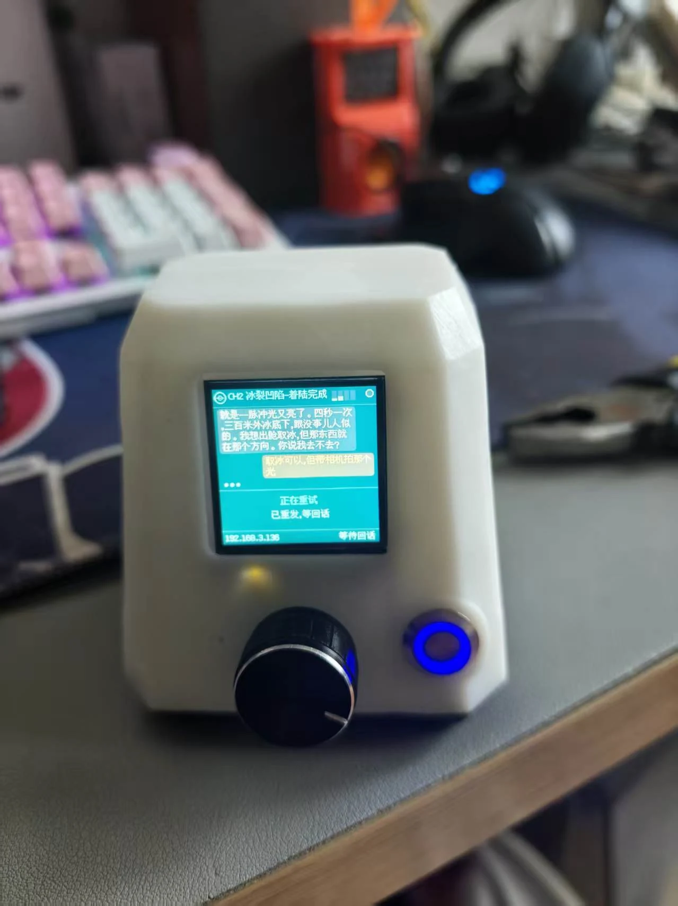
查看大图 ↗把深空带到桌面
深空以跨越 800 年的虫洞通信为叙事入口。Haimian 将这段对话带到实体小屏，用桌面设备承接游戏中的回复、选项与确认。
下面的实拍记录了设备显示深空对话的状态；同时保留外观建模、结构拆解与打印试装过程，展示从造型到实体的推进。

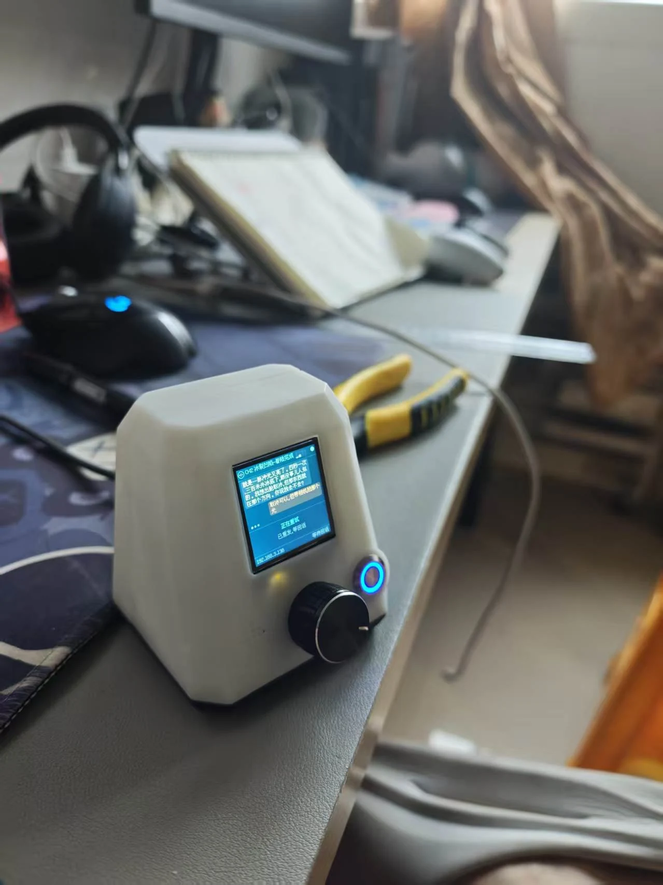
查看大图 ↗一个旋钮、一颗按键
Haimian 把小屏、旋钮和确认按键放进一台桌面设备。旋转用于选择主题或选项，短按确认，长按切换功能。
配套教程展示了 Deep Space、额度屏和时钟三个应用。同一块小屏可以切换内容，实拍中也记录了蓝白时钟主题。

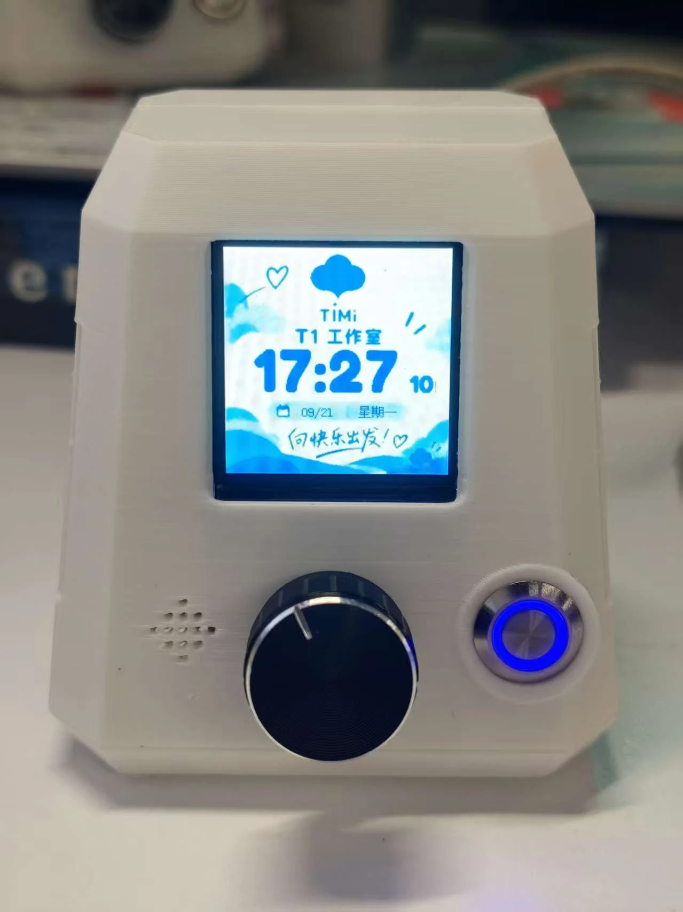
查看大图 ↗
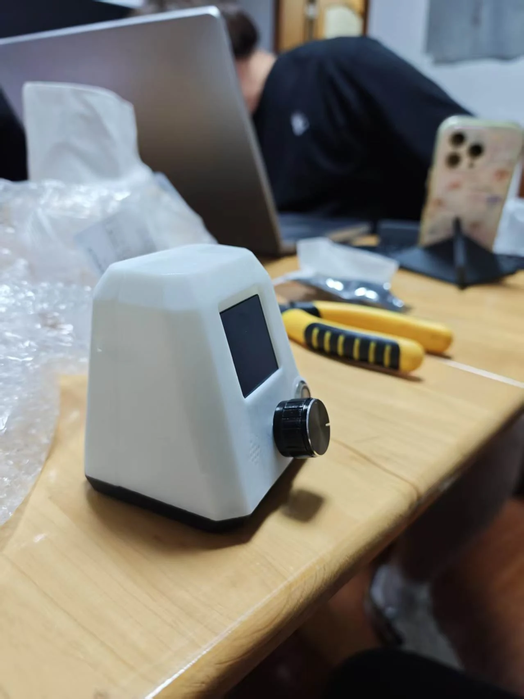
查看大图 ↗外观与结构探索
建模阶段围绕倾斜屏幕、前置旋钮、按键和前后壳体展开，使用整机视图、概念多视图与爆炸图检查空间关系。

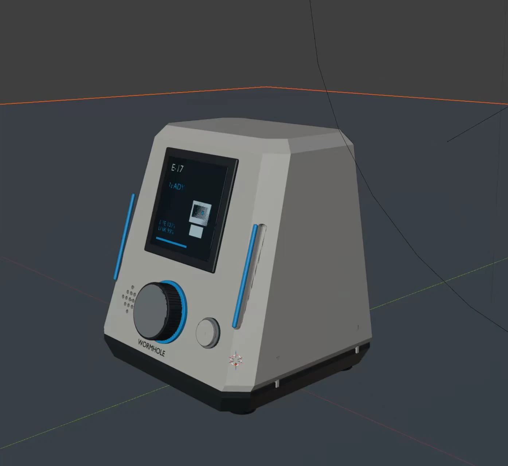
查看大图 ↗
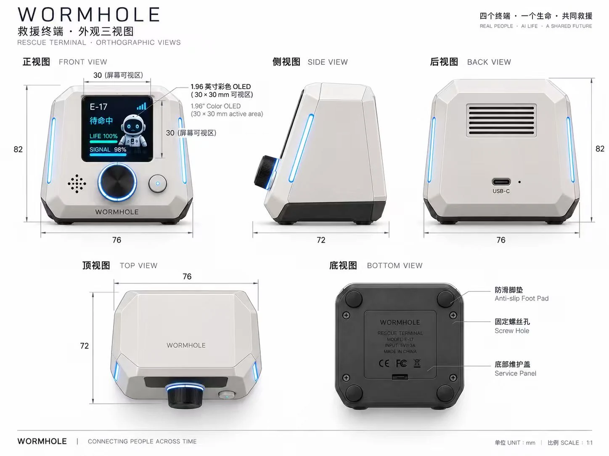
查看大图 ↗
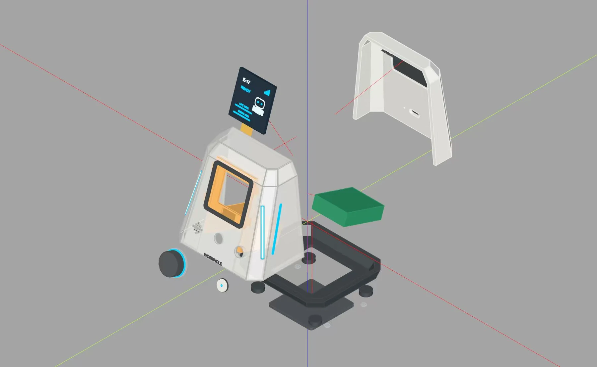
查看大图 ↗
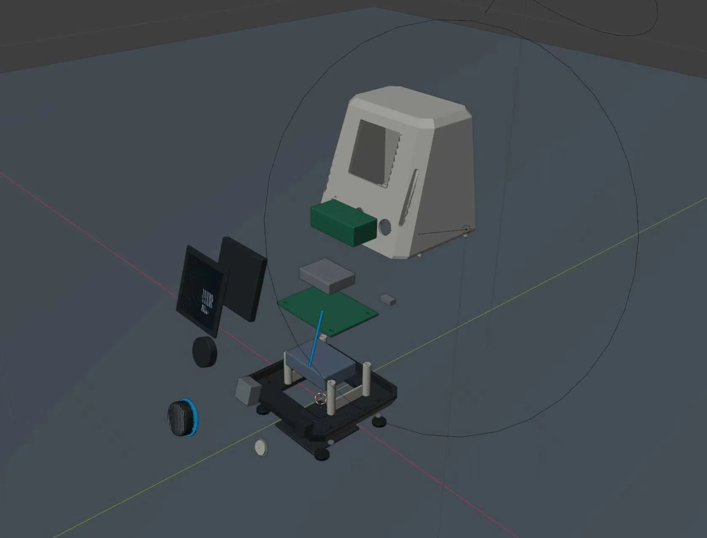
查看大图 ↗从分件到装配
壳体分为前壳、后盖和底座。结构分件和装配示意用于表达组件的进入方向，以及屏幕、PCB 与后部托架的关系。
制作过程实拍保留了未装屏幕和旋钮的壳体状态，可与完整设备对照。

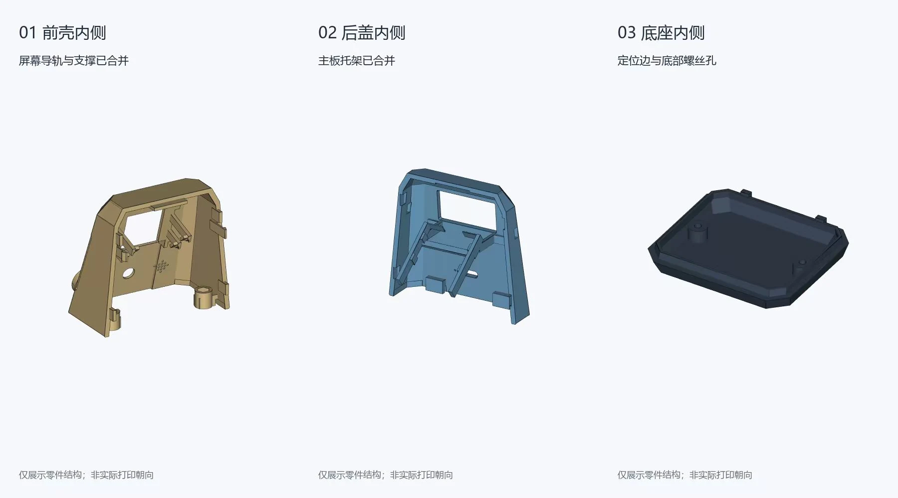
查看大图 ↗
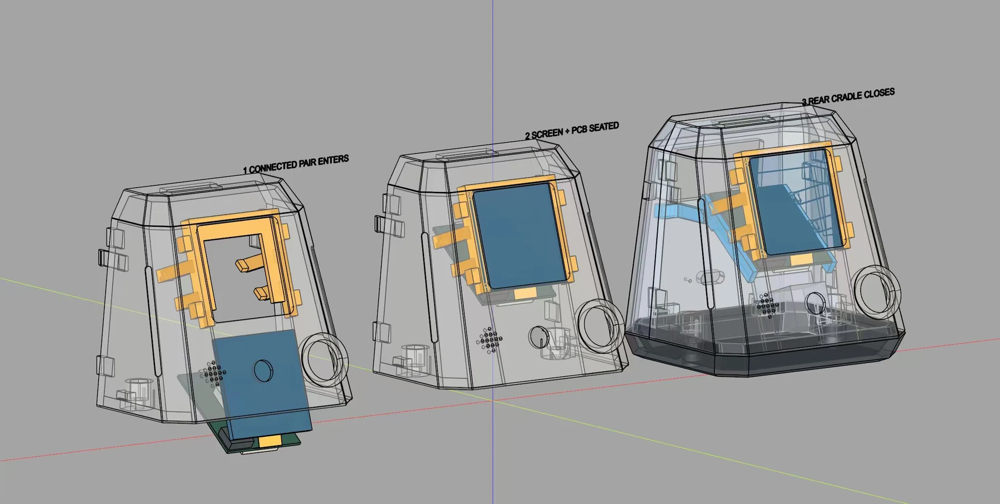
查看大图 ↗
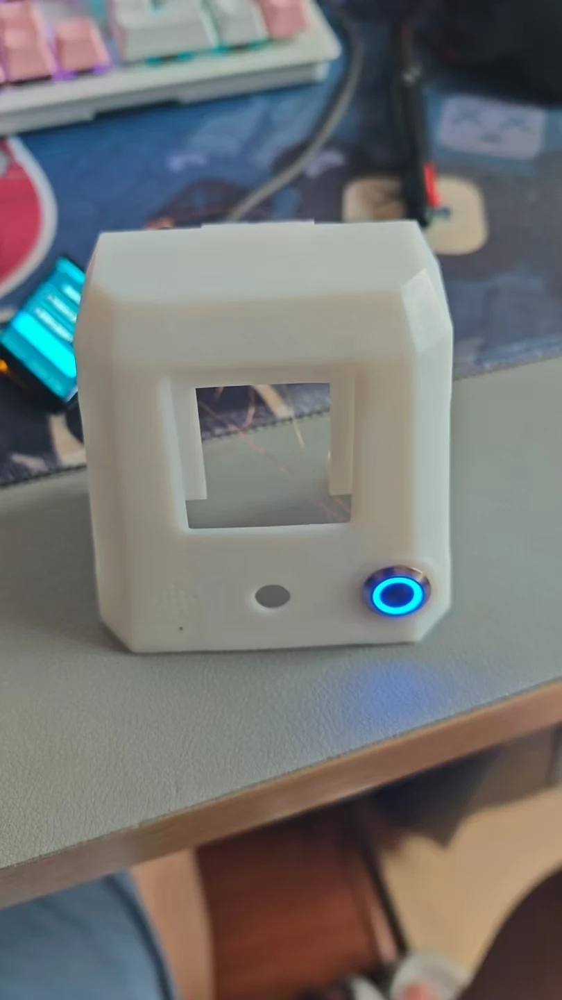
查看大图 ↗打印样件与桌面试装
白色外壳样件和桌面试装照片记录了模型落地的过程。前后壳、连接线和供电设备放在一起检查，再推进到完整设备。

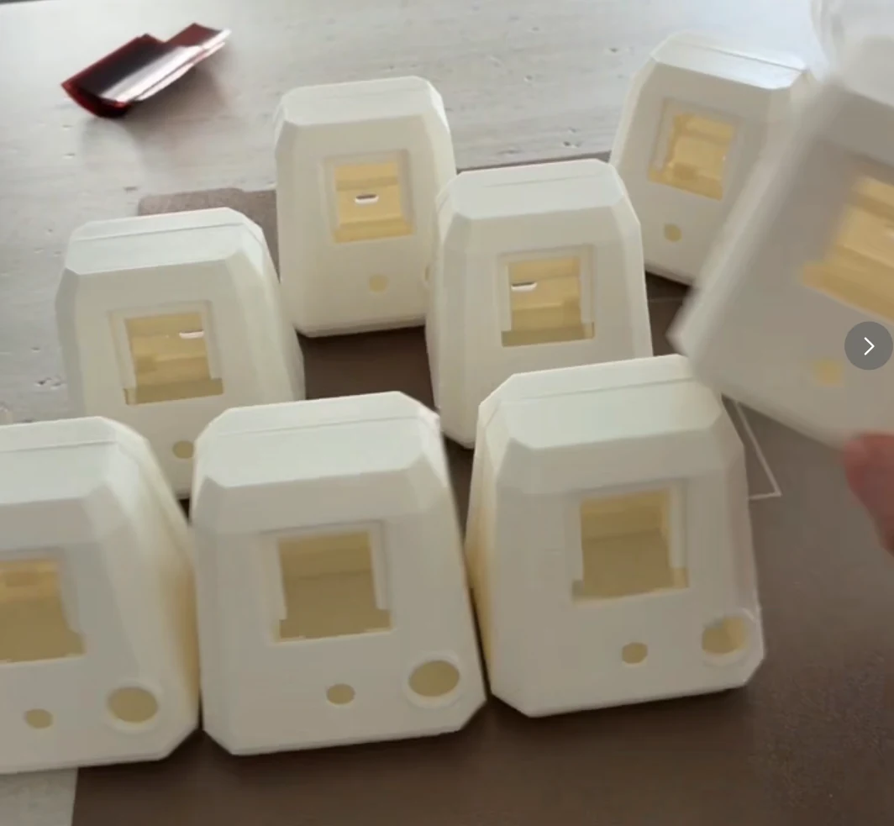
查看大图 ↗
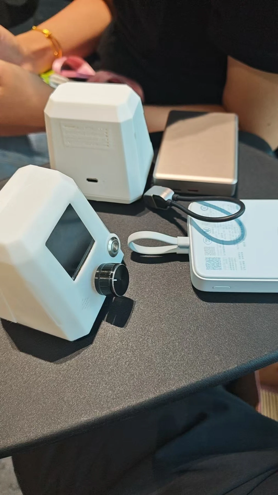
查看大图 ↗Windows USB 控制台
设备通过 USB 连接 Windows 后，可在配套控制台中查看连接状态或重新检测设备，选择应用与主题，并应用到小屏。控制台同时提供启动、停止和时间同步等入口。
应用与主题切换、时间同步可以通过 USB 在本地完成。控制台与实体设备分别承担配置和显示交互。

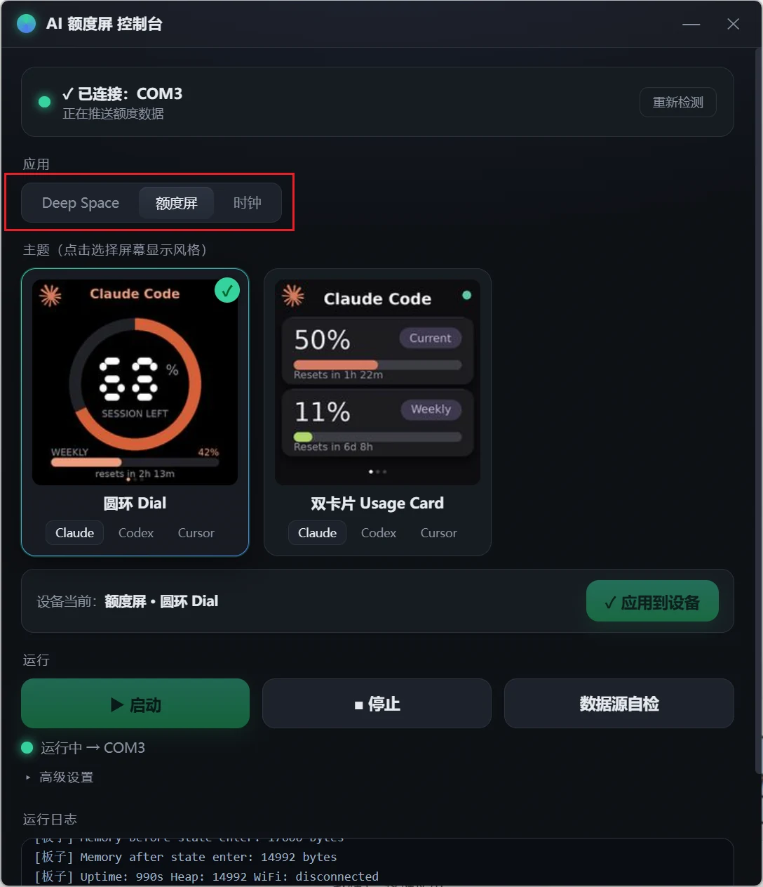
查看大图 ↗WiFi 连接与存档接续
设备可进入 AP 配网模式，在配网页中选择 2.4 GHz WiFi，保存并重启后连接深空服务。游戏服务的交互需要网络连接。
配网页提供服务器设置和存档接续入口，可使用手机端已有的存档标识继续会话，让桌面外设与原有游戏进度接上。